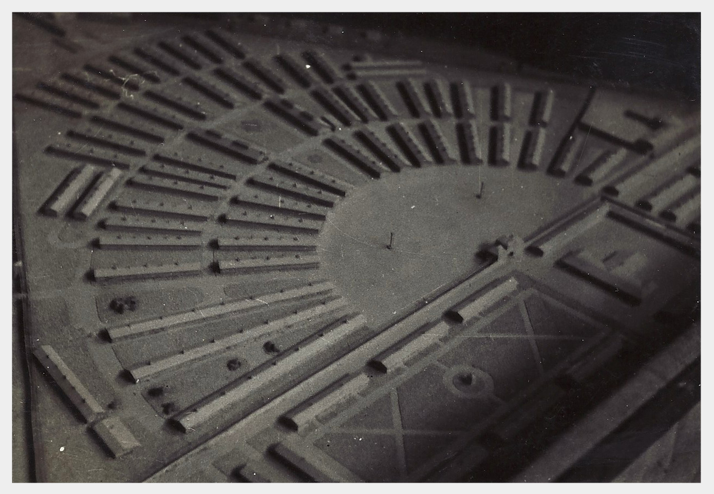
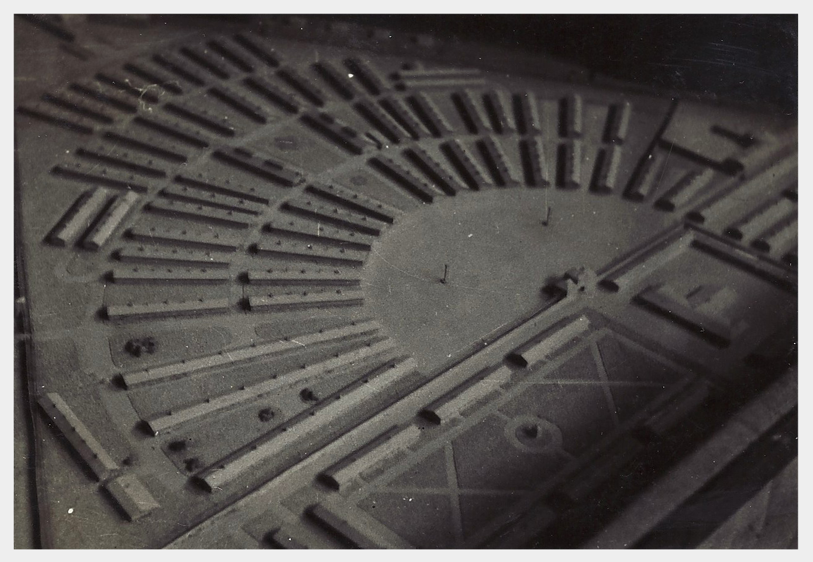

So real, it's unreal. Or is it?
 
Det begyndte en fredelig Efterårsaften i 1943. Jeg stod hjemme og tog afsked med en kammerat, da det ringede på døren, og jeg gik ud for at lukke op. Udenfor stod en Pige, som ville tale med mig. Jeg slog et grin op og sagde: ”vær så god,” men hun ville have, at jeg skulle komme ud til hende.